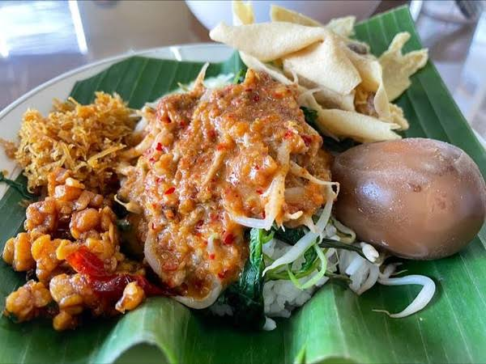
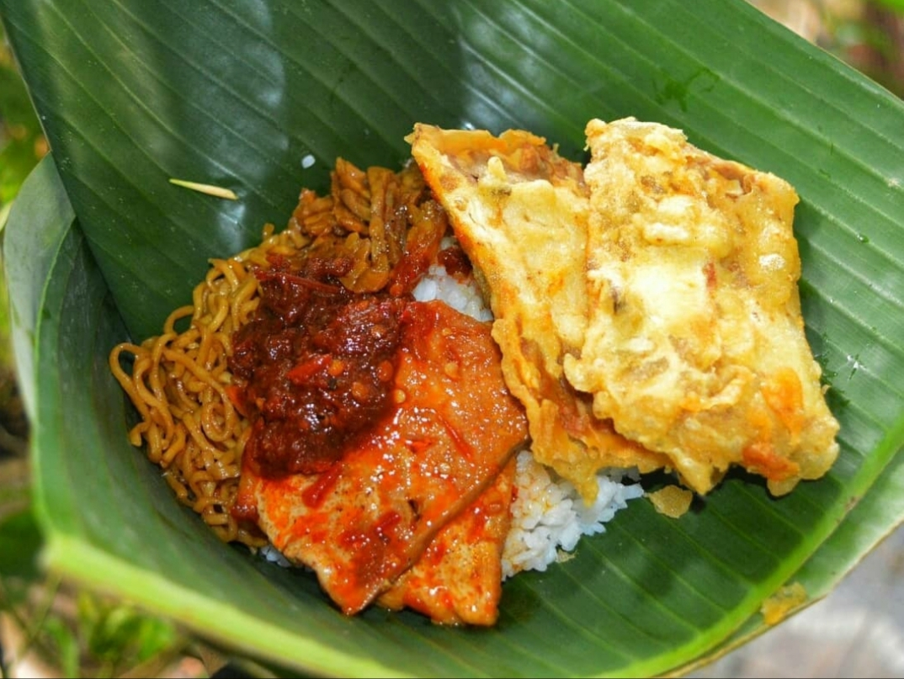
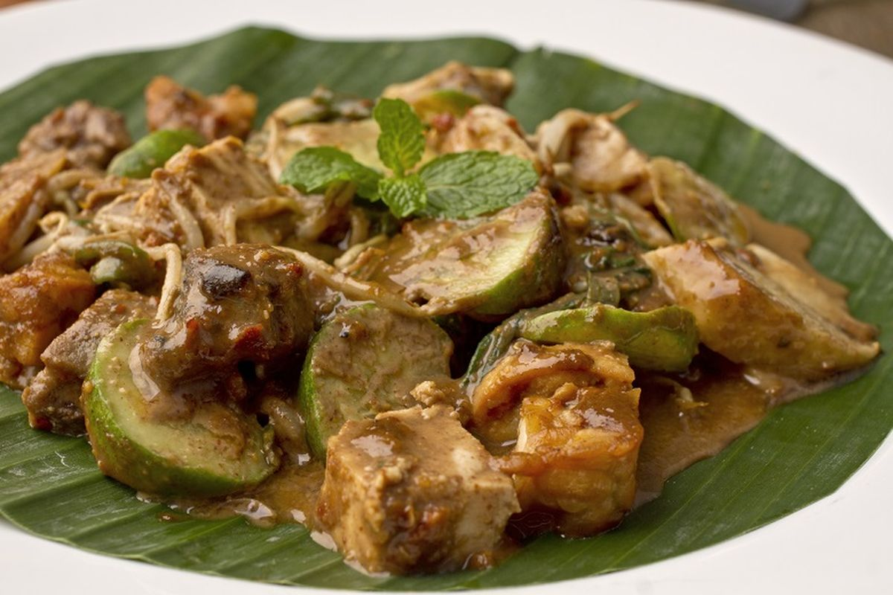
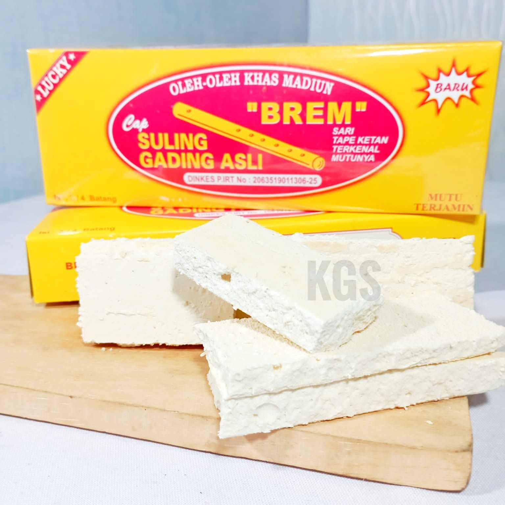
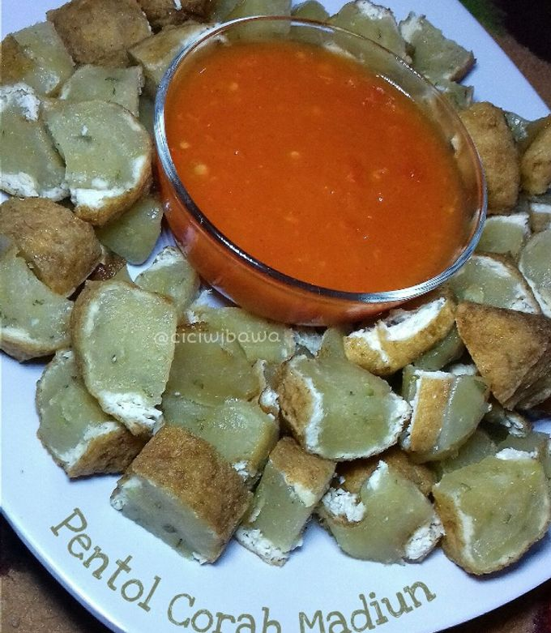
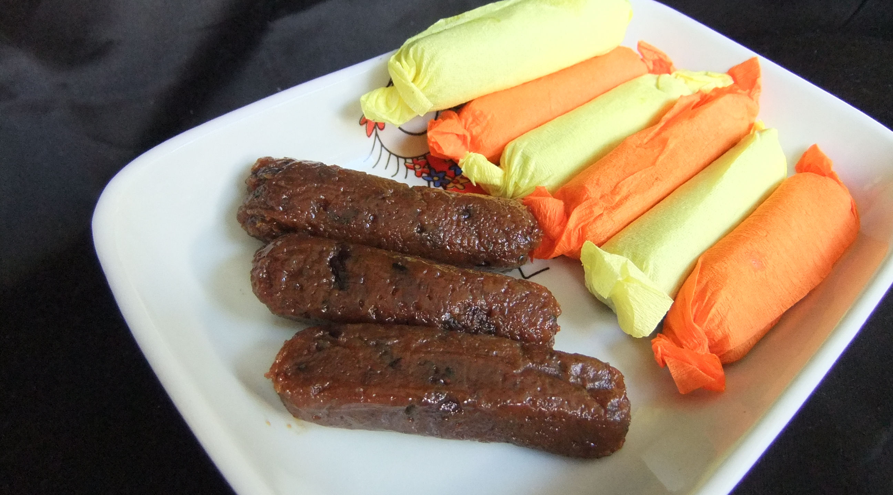

Cita rasa legendaris dari Kota Pendekar. Klik filter untuk menjelajah.

Paling IkonikNasi dengan sayur rebus disiram sambal kacang khas Madiun, dilengkapi rempeyek, tempe, dan sate keong. Sambalnya lebih gurih dan pedas manis.

Nasi bungkus kecil berisi tahu, mi, dan sambal dengan lauk tambahan. Praktis, murah, dan jadi favorit sarapan warga Madiun.

Campuran lontong, tahu, sayuran, dan cingur dengan bumbu petis hitam yang kental, manis, dan gurih. Wajib coba!

Oleh-oleh WajibKue fermentasi sari ketan berbentuk lempengan putih, manis-asam dan lumer di mulut. Ikon oleh-oleh Kota Madiun.

Pentol daging dengan kuah pedas khas berisi tahu dan tetelan. Dinamakan "corah" karena sambalnya yang nendang.

Dodol fermentasi ketan hitam yang manis legit dengan aroma tape. Sering dibungkus kertas minyak warna-warni.